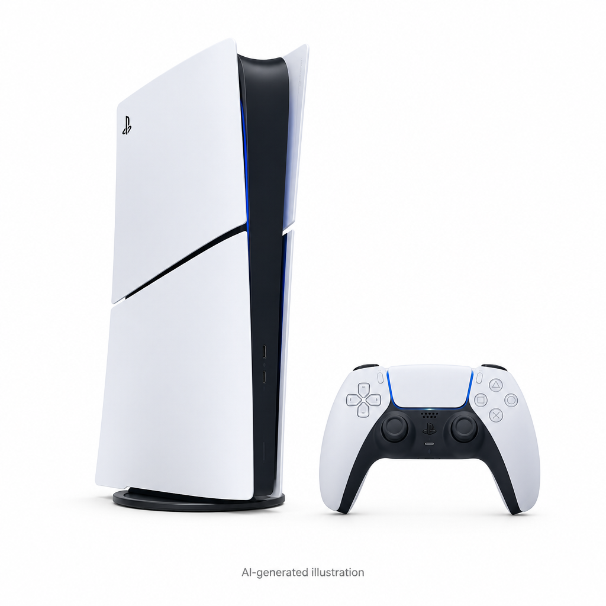

ILUSTRAÇÃO GERADA POR IASem variação desde o inícioGames
Console Sony PlayStation 5 Edição Digital Slim, SSD 825GB, Controle DualSense, Astro's Playroom, Branco - CFI 2114B
CFI 2114B
Média atual · 1 varejistaR$ 4.277,07
Primeiro registro · 24/09/2026R$ 4.277,07
Observado em 24/09/2026 (UTC)